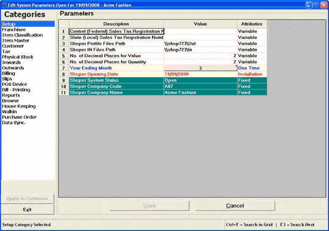

There are various parameters that decide the behaviour of Shoper 9 POS. Some of the settings are permanent and hence cannot be changed after installation. However, there are certain values that can be changed even after installation. Those values can be modified using this option.
Caution: This option has to be used with utmost care since the parameters you set decides as to how Shoper 9 POS works for you.
How to reach: Setup > General > System Parameters
The Edit System Parameters window is displayed.

Note: Click Setup under Categories to get the parameters listed as shown.
Categories: Different categories under which parameters are grouped for customising the installation are listed. Select the category by clicking the required name. The selected category will be highlighted and a message to this effect is displayed at the bottom of the screen.
Parameters: Description, current value and type of attribute of the parameters related to the category selected are displayed here.
Description: The name of the parameters under selected category is listed. This cannot be edited.
Value: Current value of the parameter is displayed. Either type in the required string or double click to edit the existing value, if the value of the field is a string. Select or unselect the check box, if the value in the field requires a yes/ no selection.
Attributes: Choose the type of attribute from the list. The list of possible values and the implications are:
Fixed — the value cannot be changed
Variable — the value can be changed as and when required
One Time — can be changed only once during or after the installation
Hidden — the parameter will not be visible for reconfiguration once it is set as hidden
Installation — to indicate that the parameter value can be set only during installation